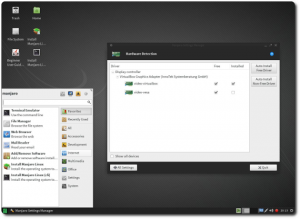
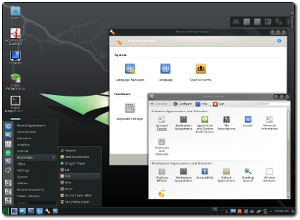
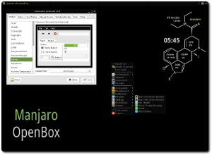

Manjaro 0.8.9
With this release we provide three unique graphical desktops, optimized for your needs. There will be our flagship XFCE edition everybody knows Manjaro for, an updated KDE edition featuring Turbulence, our new tool to customize your Manjaro installation and a redesigned Openbox edition to fit the needs of our vibrant community. Not to mention our usual community editions. The Manjaro team has grown a lot for this release, and we're expanding our roots even further!
What's happening with our official releases?
In our XFCE edition we added more XFCE 4.11 packages to refresh and optimize our default desktop we all love. Whiskermenu can now seamlessly switch users with the help of MDM display manager, and we're offering two different versions of XFCE to choose from. The first is a premium XFCE version which is feature full and includes applications for a variety of tasks. The second is a minimal version. This version features just the required packages, so that you can build up your system exactly how you want it and is small enough to fit on a CD.
The KDE edition, featuring KDE 4.12, was designed to give all Windows users a new home here at Manjaro. We gave this edition a sleek new look to match the look and feel to our other editions, featuring artwork from Tulliana and KFaenza icons to match the XFCE edition. We've also added KDE connect, so that now you can share all your files, and even control your desktop entirely with only your phone. Turbulence is also on this release, as a post install tool to help you customize your desktop even more. Everything you expect from KDE can be found on this install media.
You get Openbox 3.5.2 in our redesigned Openbox Edition. With this evolution we offer applications for a variety of tasks and Turbulence to change your wallpapers, choose your panel position, install or remove additional packages and much more. There's also been several known bugs fixed with the edition since our latest team member Dan has taken up maintaining it. This edition is perfect for older computers since it's small enough to fit on a CD, or for people who love to have a low memory foot print and a lightning fast desktop.
And the community editions?
The most noticeable change with our community editions is the new netbook edition. This is thanks to another new team member Rob McCathie. We recommend this edition for most netbooks, since it has several features and optimisations for small screens and common netbook hardware. This edition uses a lightweight XFCE implementation with a modified XFWM4 and DockBarX. An Intel Atom-optimised kernel is available and a normal kernel remains available for people on other hardware. But it doesn't stop there, this edition also features a specific Flash plugin version and configuration that provides jolt-free full-screen 360p Flash video playback.
There's also the LXDE edition. LXDE is a lightweight desktop that's similar to XFCE, though more simplistic and lacking compatibility with Compiz. It's a rather basic desktop that excludes some modern features that many would expect, such as a search bar to find applications, however this is also one of it's strengths. If you don't wish to use a WM but you still require a low resource desktop, then LXDE is a great choice. It has a low memory footprint, but still has a sleek look and feel.
Not much has changed with the rest of the community editions, they remain in good shape. The Cinnamon, Gnome, and Mate editions feature some fresh artwork and theming, as well as all of the usual package updates.
We've also had some changes in our utilities.
Thus has received many improvements for this release, particularly with the advanced partitioning screen. Some of the most noticeable are the options for LUKS and LVM encryption of partitions, improved UEFI support, improved filesystem detection and handling, and several general bug fixes. This installer has grown a lot since the last release.
With Pamac 0.9.7, you can now enable or disable AUR support from a user friendly settings menu, or change the frequency of update checks. There's also been the addition of a new "view history" button so you can see the changes that you've made. But that's not all, Pamac now also supports building and installing tarballs directly from the AUR by simply double clicking them in your file manager.
There's also been improvements to the Manjaro Settings Manager. We've added support to control Manjaro's acclaimed MHWD from a new, graphical interface. With this addition, you can now detect and install your appropriate video drivers, choosing between free or nonfree.
And last but not least, we've had a new application arise that's completely unique to Manjaro, Turbulence. Turbulence is new tool developed completely from the ground up to help you customize your new installations. Written for KDE and OpenBox, you can now use it to easily change some of the things that most people do anyway right from the first boot onto your installed system. Using this utility, you can change common things like your wallpaper, and what home folders you're using. Desktop specific features include changing your Kwin theme, and your Tint 2 panel position, as well as the ability to install or remove software for OpenBox.
New features of Pamac 0.9.7
- Enable/disable AUR support
- Change pamac-tray refresh period
- Remove unrequired deps (recurse option: -Rs)
- Edit settings via pamac-manager/updater GUI
- Add a 'view history' entry in pamac-manager menu
- Add AUR support to pamac-install script (if enabled in pamac.conf)
New features in MHWD
- Support for network cards
New features in Thus - graphical installer
- code cleanup and restructure
- added home dir to automatic mode
- fixed resizing in language slide
- fixed parted issues in advanced mode
- added a logging message when an unknown exception is thrown in installation_process
- added encfs for home-dir encryption: pam_encfs is needed
- fixed GUID partition table creation in advanced
- fixed UEFI support
- luks and lvm in automatic mode is now enabled
- removed backported chroot code from live-installer (old python2 code)
- modified grub installation
- reordered slides: language > location > check > timezone > keymap > ask > (automatic, alongside, advanced) > user_info > slides
- fixed swap partition detection in advanced mode
- fixed swapoff in advanced mode
- mount source squashfs only when not already mounted
- fixed myhomepath in partition_module
- fixed verbose error messages
- use 'sudo -E' directly in thus script
- some strings got updated
- keyboard layout generator added
- code optimizations
- advanced mode should detect now all supported filesystems properly
- proper btrfs support
- updated translations
New features in Manjaro Settings Manager
- MHWD support
- added translation support
Turbulence 0.3.3
- Provides information about Manjaro
- Process detection method to provide different configuration methods for what process you currently have running
- Allows users to select what home folders they would like to use now in multiple languages
- Allows users to select what theme they would like for KWin (KDE)
- Allows users to select what position they want for Tint 2 (OpenBox)
- Allows users to select what wallpapers they want (KDE/OpenBox)
- Allows users to select what packages they want or don't want (OpenBox)
- Allows users to access their system settings panel or open manjaro.org in their browser
ManjaroISO
- use stable branch
- use linux310
Package Updates
- Linux 3.10.30
- Mesa 10.0.3
- Xorg-Server 1.14.5
- Gstreamer 1.2.3
- LibreOffice 4.1.5
- MHWD 0.3.3
- libdrm 2.4.52
- Catalyst 13.12
- Nvidia 331.38
But wait, there's more ...
Manjaro shares many of the same features as Arch1, including:- Speed, power, and efficiency
- Access to the very latest cutting and bleeding edge software
- A 'rolling release' development model that provides the most up-to-date system possible without the need to install new versions, and
- Access to the Arch1 User Repository (AUR).
- A simplifed, user-friendly installation process
- Automatic detection of your computer's hardware (e.g. graphics cards)
- Automatic installation of the necessary software (e.g. graphics drivers) for your system
- Its own dedicated software repositories to ensure delivery of fully tested and stable software packages, and
- Support for the easy installation and use of multiple kernels.
- Pamac makes it easy for you to install additional software and manage your applications.
- Octopi is our alternative frontend for pacman and yaourt. With its simple gui it is easy to maintain your packages.
- Manjaro Settings a collection of graphical user interfaces to manage your keyboard, translation packages, hardware and user accounts.
- ManjaroISO enables you to respin Manjaro as you might like it. You can add any supported software to your own compilation and share it with our community.
Desktop Environments
There are several Desktop Environments and Window Managers available for Manjaro, each with their own unique style, interface, and features. Furthermore, it is possible to install multiple environments if desired, which can be selected at the login screen at any time. Users are not resitricted to whatever comes pre-installed with a particular flavour of Manjaro.
How to install additional Desktop Environments is documented in our wiki.
XFCE 4.11
Xfce is a lightweight desktop environment for UNIX-like operating systems. It aims to be fast and low on system resources, while still being visually appealing and user friendly. Refer to the XFCE 4.10 Release Notes for more details.
Openbox 3.5.2
Openbox is a highly configurable window manager. It allows you to change almost every aspect of how you interact with your desktop and invent completely new ways to use and control it. It can be like a video game for controlling windows. But Openbox can also be kept extremely simple, as it is in the default setup, meaning that it can suit just about anybody. Openbox gives you control without making you do everything. Refer to the Openbox homepage for more details.
KDE 4.12
KDE is a feature-rich and versatile desktop environment that provides several different styles of menu to access applications. While very user-friendly and certainly flashy, KDE is also quite resource heavy and noticably slower to start and use than a desktop environment such as XFCE. Refer to the KDE homepage for more details.
1Manjaro is not provided or supported by the Archlinux Distribution. Official, unmodified Arch software is available through the Archlinux website.